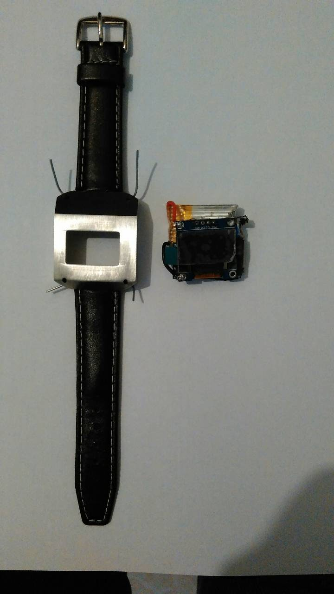
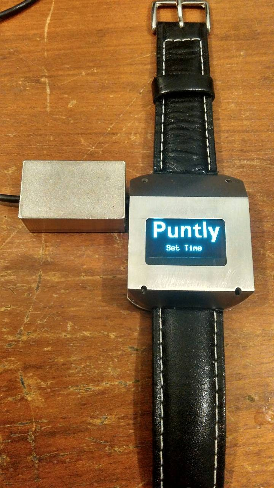
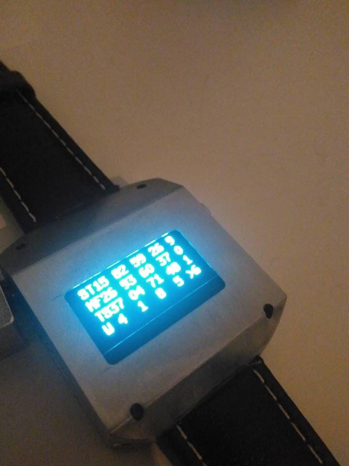
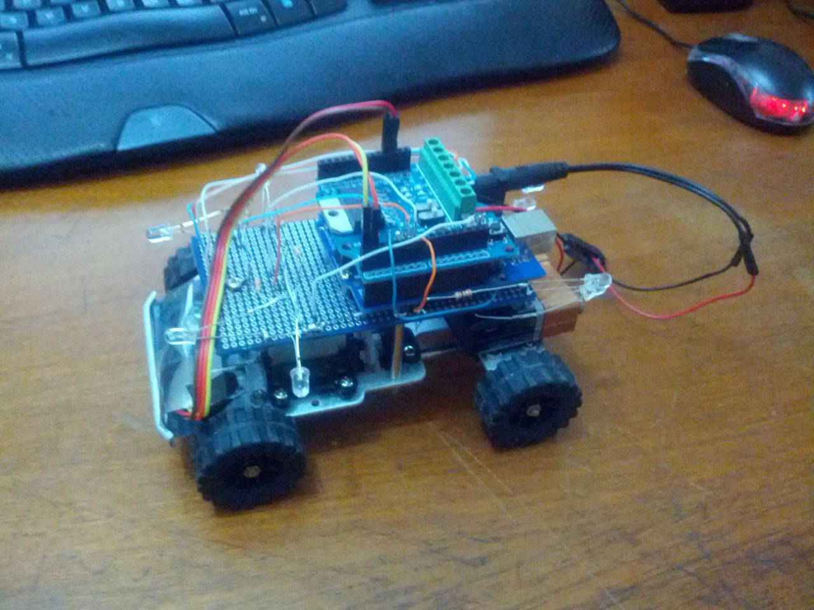
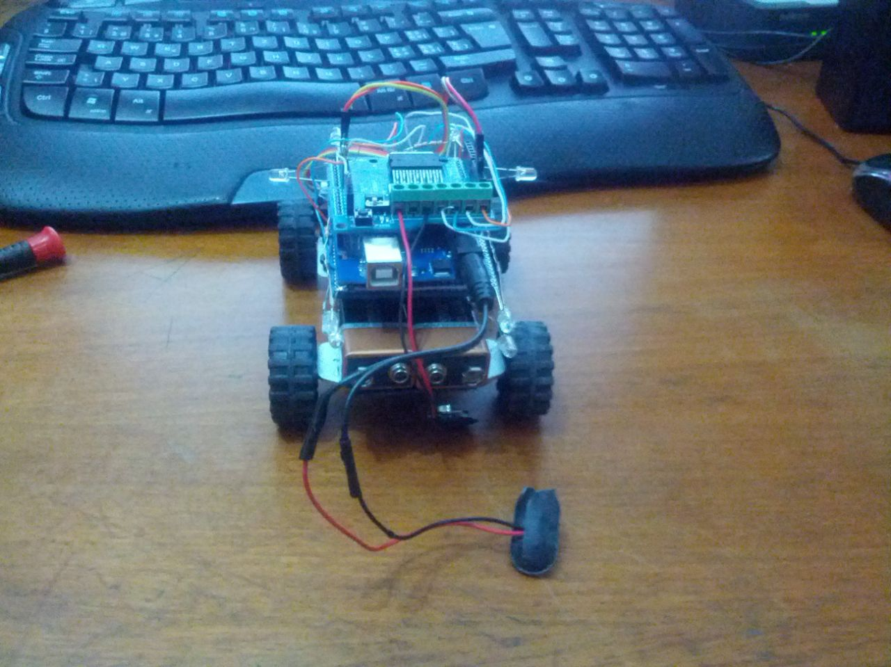
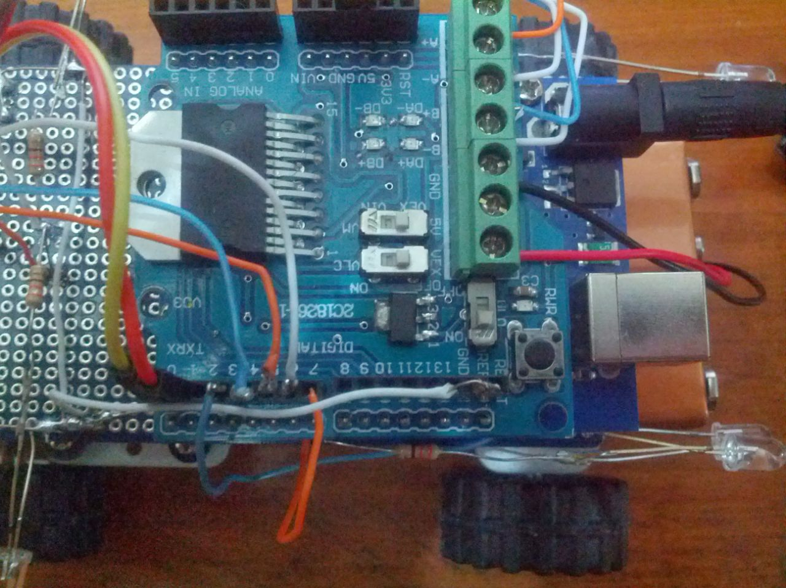

Home
ESPECIALISTA DE AUTOMAÇÃO, PROXXI
Trabalho desenvolvendo automações e soluções para a extração de métricas e resultados da ferramenta do cliente, visando a redução do custo, tempo e trabalho necessário na realização das tarefas, utilizando Auto HotKey, VBScript, VBA. Construção sistema web de monitoramento e acionamento remoto das automações. Reduzi o tempo gasto com a extração e análise de métricas de um terço do dia para alguns minutos e aumentei a frequência e a facilidade com a qual a liderança pode ter acesso a esses dados.
 home
homeOlá mundo
O começo da página
Olá pessoal!
Esta é a primeira postagem, mais um resumo de como será.
Durante meu almoço e os momentos livres da faculdade, postarei situações do meu dia a dia,
algo das automações que cuido, automações novas, ideias aleatórias tanto de projetos com Arduino, coisas web, locais e etc.
Atualmente estou trabalhando com o AutoHotKey, que utiliza uma linguagem likeBasic, maior parte dos comandos são os mesmos utilizados em VB,
Seja VBA em uma planilha do Excel (para reduzir o número de cliques, facilitar o export de dados de uma sheet a outra e até enviar emails),
VBS para as ações no Windows (mover, criar, apagar pastas, arquivos, trabalhar com o DOM Object do Internet Explorer)
Porém o AHK tem funções muito legais a mais:
-Reconhecimento de imagens na tela (posso procurar por uma imagem na tela, um botão, um campo, comparando os pixels);
-Diversas bibliotecas, como VIS2 e OCR para reconhecimento de texto em imagem, conexões remotas, FTP (uma lista completa aqui);
Nos próximos posts, colocarei algumas bibliotecas e códigos que utilizo com frequência, curiosidades do dia a dia, etc!
Se gostou, compartilhe! Até a próxima!
Gabriel Christino
Programador e inventor por hobby e profissão
Aprendi a programar por curiosidade em 2005, com uma apostila de VB6 e querendo entender como funcionava o Paint e a Calculadora.
Hoje trabalho com VB, Python, Java, C++ e na parte Web com HTML, CSS, JS, PHP e MySQL.
Com Arduino montei alguns protótipos de smartwatch (o projeto atual utiliza um ESP32 32F, com bluetooth e WiFi), um Jipe controlado via bluetooth do celular.


Tela de configuração remota

Matriz de LED



Comece a programar
Dicas
Programação Orientada a Gambiarras